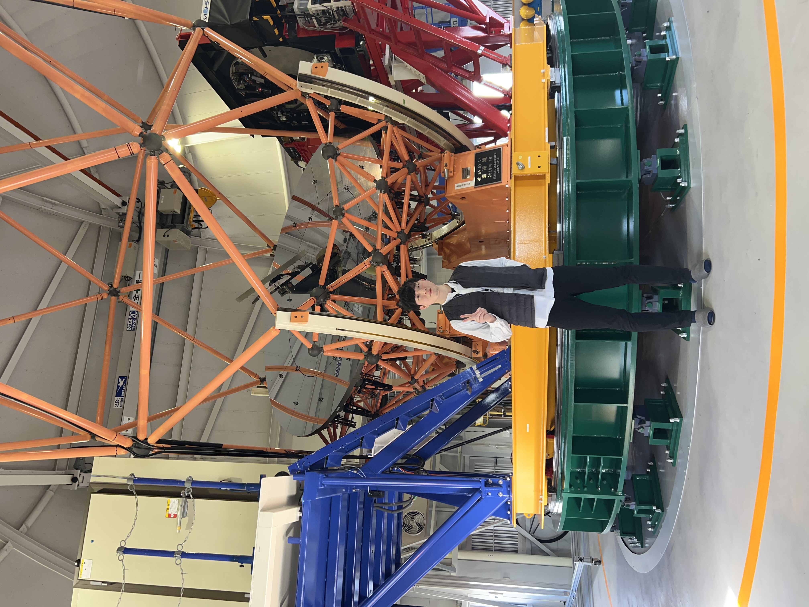

Profile

東アジア最大の光学望遠鏡"せいめい望遠鏡"を利用した際（2024.11）
Name: 土井知也 Kazuya DOI
Age: 28歳 (1996.11.24)
Attraction: 太陽系小天体（小惑星、特に地球近傍小惑星や彗星）の観測天文学
Hobby: サウナ、バスケットボール、ミニマリズム、J-POP（平井大、Mrs. GREEN APPLEなど）
Contact
Background
1. Education & Work
- 2024.09 札幌市教員採用試験 合格（中学校・理科）採用猶予制度利用
- 2024.04 札幌市立稲穂中学校 時間講師
- 2024.04 レバンガ北海道U12 アシスタントコーチ（業務委託）
- 2024.04 北海道大学大学院理学院宇宙理学専攻 入学 探査・観測ユニット(EOU) 所属
- 2023.08 札幌市立中学校（開成中等、あいの里東、手稲） 時間講師
- 2023.03 倶知安町立倶知安中学校 退職
- 2019.04 倶知安町立倶知安中学校 赴任、所属（副担任、1-3担任）
- 2019.03 北海道教育大学旭川校理科教育専攻 卒業
- 2018.09 北海道教員採用試験 合格（中学校・理科）
- 2015.04 北海道教育大学旭川校理科教育専攻 入学
- 2015.03 北海道小樽桜陽高等学校 卒業
- 2012.04 北海道小樽桜陽高等学校 入学
- 2012.03 余市町立東中学校 卒業
- 2009.04 余市町立東中学校 入学
- 2009.03 余市町立黒川小学校 卒業
- 2003.04 余市町立黒川小学校 入学
- 1996.11 生誕 ＠青森県弘前市
2. Study
- 2024.12 EOU Seminar #2
- 2024.11 EU-ESA Workshop of PHA @Germany, Online
- 2024.11 せいめい望遠鏡を用いたはやぶさ2#ターゲット小惑星”Torifune”の観測 @国立天文台岡山分室
- 2024.10 ピリカ望遠鏡を用いた彗星”Tsuchinshan-ATLAS”の観測開始 @名寄市立天文台
- 2024.09 せいめいユーザーズミーティング @岡山県倉敷市, Online
- 2024.09 EOU Seminar #1
- 2024.07 せいめい望遠鏡共同利用2024年後期プロポーザル 採択
- 2024.06 ピリカ望遠鏡を用いた小惑星”2024 MK”の観測 @名寄市立天文台
- 2024.06 JAXA アステロイドデー @神奈川県相模原市, Online
- 2024.04 せいめい望遠鏡共同利用2024年後期プロポーザル 提出
3. Sports (Coaching)
- 2024.12 レバンガ北海道U12 前座試合 #1, 練習試合 vs 白石ミニバス（北海道1位） 勝利
- 2024.12 レバンガ北海道U12 星槎道都CUP 優勝 ＠北広島市
- 2024.09 レバンガ北海道U12 K CUP 優勝 ＠倶知安町
- 2024.09 JBA公認C級コーチ講習 修了
- 2022.12 新人戦南北海道大会 出場（小樽地区第2代表）、予選リーグ 敗退 ＠苫小牧市
- 2022.02 JBA公認D級コーチ講習 修了
- 2022.01 小樽地区U14男子DCスタッフ
- 2021.01 小樽地区U13男子DCスタッフ
- 2020.01 小樽地区U13男子DC（旧選抜）スタッフ
- 2019.12 新人戦南北海道大会 出場（小樽地区第1代表）、予選リーグ 敗退 ＠小樽市
- 2019.09 JBA公認E級コーチ講習 修了